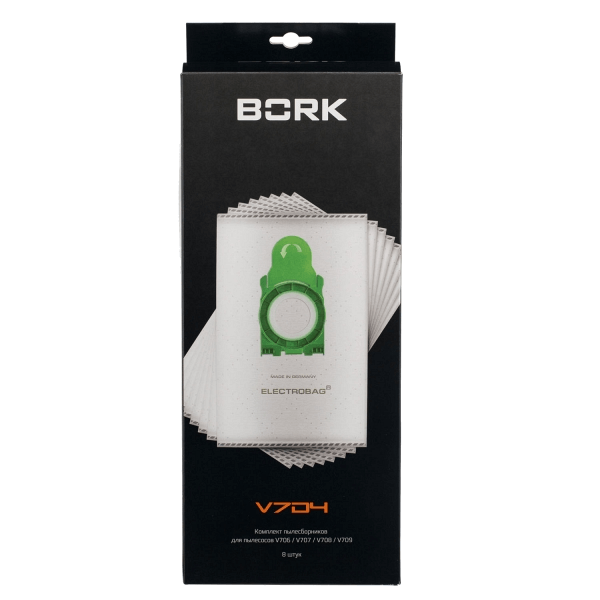

Bork V7D4 Мешки-пылесборники для пылесосов
Материал мешков для сбора пыли обладает электростатическими свойствами, что позволяет задерживать более 99.9% мельчайших частиц пыли размером 0.3 микрона, гарантируя высокое качество очистки воздуха и долгий срок службы пылесоса.
Основные характеристики
Применяются к моделям пылесосов: BORK V706, V707, V708, V709
Тип оригинального пылесборника: сменные
Материал пылесборников: нетканый
Антиаллергенная обработка: да
Количество пылесборников в комплекте: 8 шт.
Цвет: белый/зеленый
Модель товара: V7D4
Гарантия: 1 год
Страна-производитель: Германия
Надежная защита здоровья вашей семьи
Комплект состоит пылесборников со сроком использования 1,5 месяца для каждого. Модели ELECTROBAG® обладают электростатическими свойствами для удержания мельчайших частиц. При удалении из пылесоса они герметично закрываются крышкой, что подходит для людей, страдающих от аллергии и предъявляющих повышенные требования к гигиене.